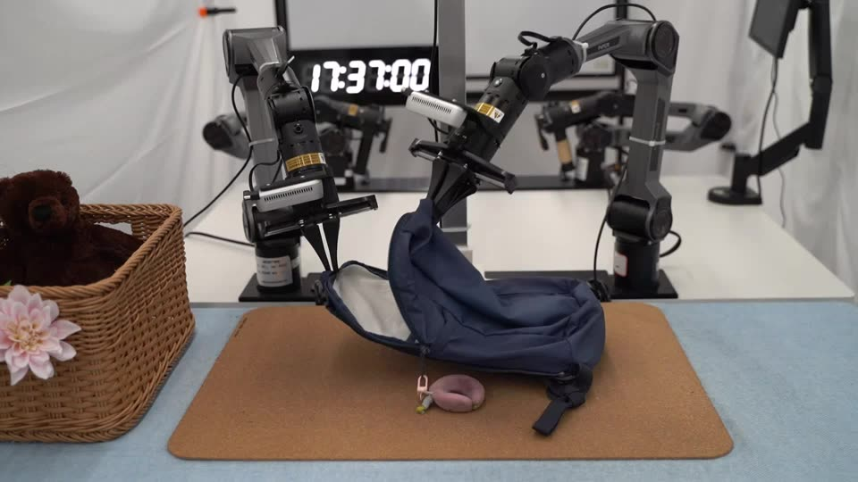
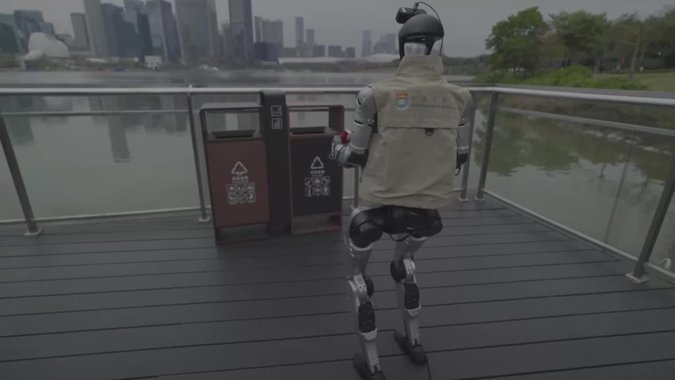
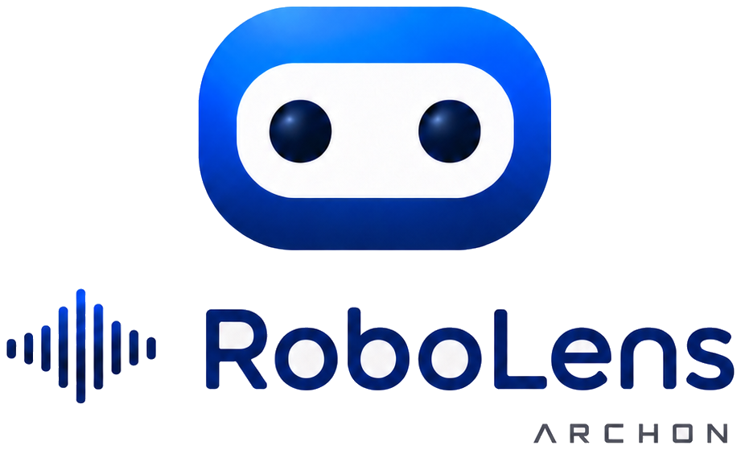
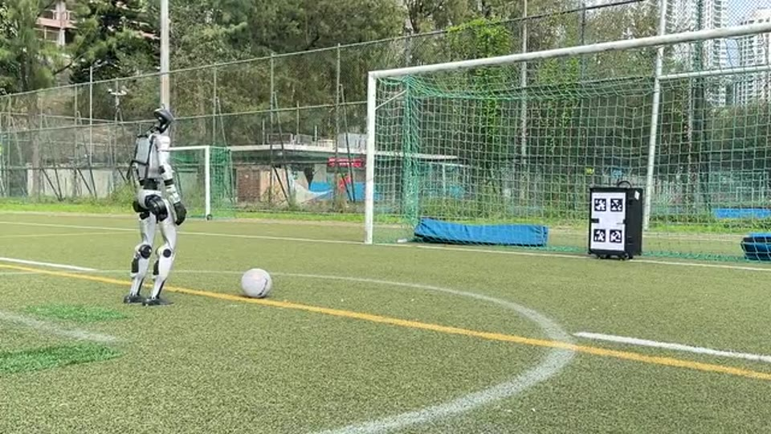
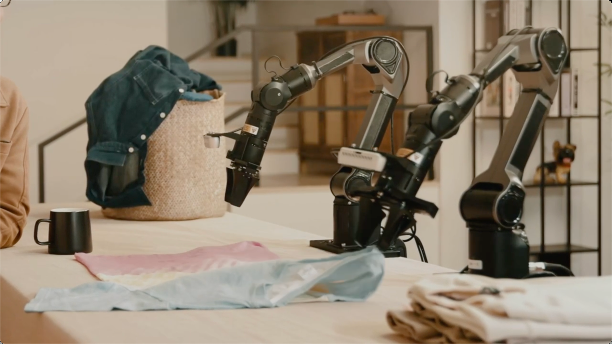
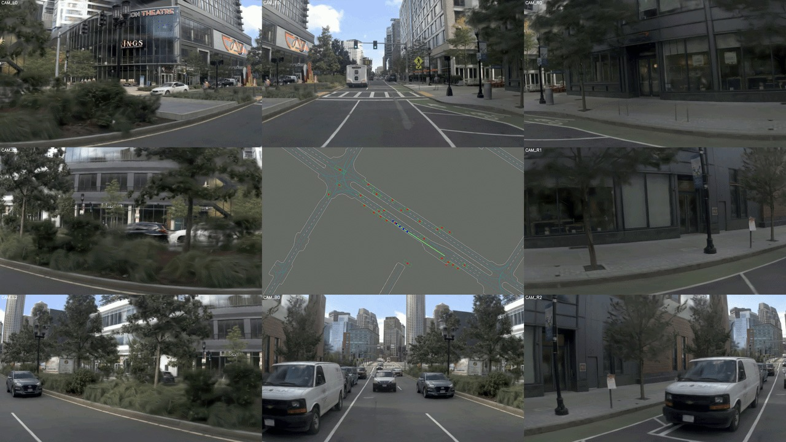

Overview
Archon & OpenDriveLab at RSS 2026 focuses on robot world models, long-horizon control, open-source systems, and real-world autonomy.
The Latest at RSS 2026 from Archon & OpenDriveLab

Self-Improving Robot Policy
Compositional world models deliver +35% to +45% gains across dexterous real-world manipulation.
Main Conference
Robot-Free Human Demonstrations
Egocentric human demonstrations align robot data, improving humanoid loco-manipulation by 51%.
Main ConferenceOn-Site Event
Our on-site program brings together talks, demos, interviews, and community gatherings to share frontier insights in embodied AI and real-world deployment.
Talks
Jul 14 · 10:00 AM
Hongyang Li
Biography
Assistant Professor, HKU / Assistant Director, HKU CDS / Founder, Archon Robotics.
Topic: Whole-body Intelligence with Human-centric Data
How can human-centric data become a principled substrate for whole-body intelligence? Drawing on sustained work in embodied intelligence, autonomous systems, and human-centric robot learning, the speaker will examine how behavior traces and demonstrations can be structured for cross-embodiment transfer. The discussion will foreground evaluation beyond isolated demos, toward robot capabilities that generalize across bodies, tasks, and environments.
Jul 17 · Time TBA
Topic: Robot World
Li Chen
Biography
Head of AI, Archon Robotics.
Topic: Robot World
Models
What should a robot world model predict, abstract, and control to support long-horizon decision making? Drawing on a research trajectory in embodied AI systems and model-based autonomy, the speaker will connect controllable prediction with planning, imagination-based policy improvement, and evaluation. The talk will frame world models as operational interfaces between perception, memory, and physical consequence.
Jul 13 · 08:35 AM
Tianyu Li
Biography
CEO, Archon Robotics.
Topic: Long-Horizon Whole-Body Execution
What does robust execution require when whole-body policies encounter contact, latency, and task drift in the physical world? Drawing on deployment-oriented research in VLA systems and long-horizon robot control, the speaker will examine execution-time feedback, recovery, and progress estimation. The discussion will position robustness not as a post-hoc correction, but as a design principle for reliable humanoid autonomy.
Editor Pick
RoboLens Interviews

Jiazhi Yang
Co-organizer
Curates sharp conversations with the builders shaping embodied intelligence.
Lirui Zhao
Co-organizer
Shapes the production cadence and turns field conversations into lasting notes.
RoboLens captures the people behind frontier robotics: how they ask, build, fail, and rethink robotics.
Refresh the lens. Catch the brilliant you.
Open the frame. Meet the next builder.
Listen closer. The best ideas are already moving.
Refresh the lens. Catch the brilliant you.
Workshop
July 13 · 8:30-12:30
Workshop site
Towards Robust Execution of Long-Horizon Whole-Body Control Tasks
- Talk Tianyu Li · long-horizon whole-body execution
- Talk invited perspectives on robust robot execution
- Talk Yi Li · robot learning under deployment pressure
- Talk Marcel Torne · policy learning for long-horizon tasks
- Talk Tapomayukh Bhattacharjee · contact-rich assistance
- Talk Fan Shi · robust robot execution in the wild
- Demo RoboNaldo · humanoid football in the field
- Demo SMASH · onboard humanoid ping-pong rallies
Live Demo
Kick, rally, and stress-test robot skills with us. Hands-on demos for fast feedback, recovery, and whole-body control.
RoboNaldo Football
Power shots from a humanoid striker.
- Precision kick
- Balance recovery
- Outdoor field
SMASH Ping-Pong
Fast rallies through onboard vision.
- Onboard vision
- Quick rally
- Whole-body swing
Code, Dataset, and Checkpoints
01
02
EgoHumanoid
Egocentric human demonstrations aligned with robot data for humanoid loco-manipulation.

03
04Kai0
Generalist robot policy assets for embodied post-training, curation, and evaluation.
 05
05
SparseVideoNav
Sparse video generation for beyond-the-view navigation with sub-second trajectory inference.

06World Engine
Physical AI post-training infrastructure for long-tail autonomous-driving scenarios.
Careers
Careers at Archon Robotics and OpenDriveLab
Our mission: build real-world robot intelligence that perceives, acts, learns, and reasons.
We hope you'll join us!
If you love hard tech, chase the unknown, and want robots to work in the real world, we want you here. Together, let's build something great and make it real!
See far.Bold questions.
Move fast.Build. Test. Ship.
Raise the bar.Lift the team.
Ecosystem Partners
Ecosystem Partners
HKU MMLabResearch partner for robot learning, world models, and multimodal systems.
Shanghai Innovation InstituteResearch collaboration across Physical AI and embodied systems.
AgiBotHumanoid hardware, robot data, and real-world deployment ecosystem.
UnitreeHumanoid platform support for whole-body control and live demos.
Service to the Community
Hongyang Li
Area Chair
Haoran Jiang
Reviewer
Modi Shi
Reviewer
Haochen Tian
Reviewer
Bangjun Wang
Reviewer
Ziye Wang
Reviewer
Jiazhi Yang
Reviewer
Hai Zhang
Reviewer